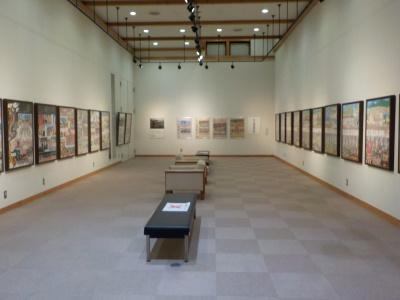
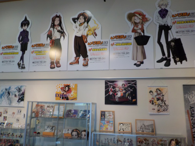

出雲文化工房で漫画家平野勲氏の原画を見ました。
2022/10/30

平野勲さんの絵はポスター等でよく見ますが、作品をまとめて見たにのは初めてです。
出雲市各地のお祭りや出雲駅伝のポスターの原画がありました。生き生きと何かの動作をしている人が沢山描かれているので、見てて楽しかったです。

シャーマンキングのグッズやイベントに使われたパネルも展示してありました。
島根県出雲市浜町520
2022/10/30

平野勲さんの絵はポスター等でよく見ますが、作品をまとめて見たにのは初めてです。
出雲市各地のお祭りや出雲駅伝のポスターの原画がありました。生き生きと何かの動作をしている人が沢山描かれているので、見てて楽しかったです。

シャーマンキングのグッズやイベントに使われたパネルも展示してありました。